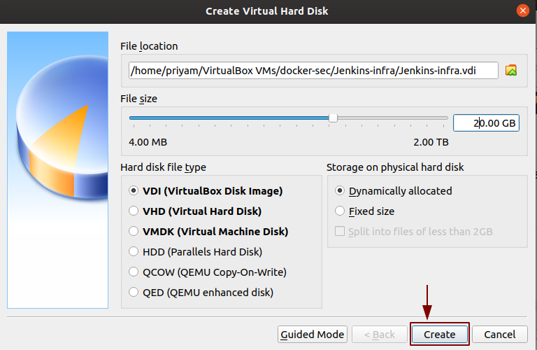
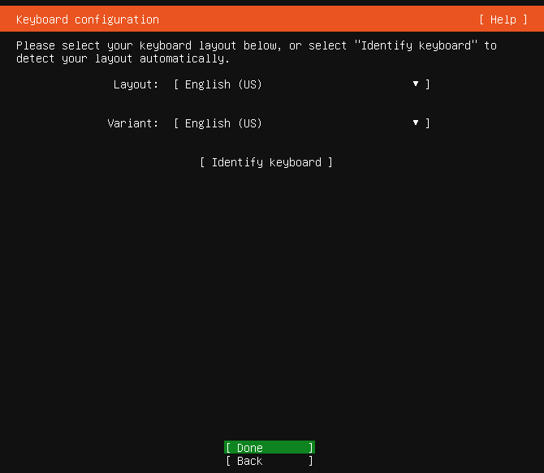
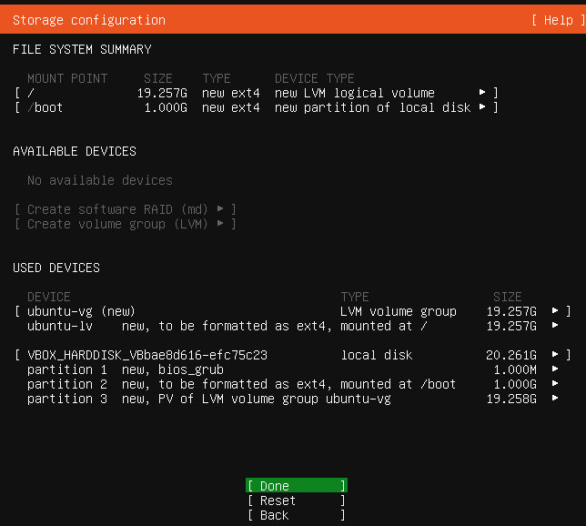
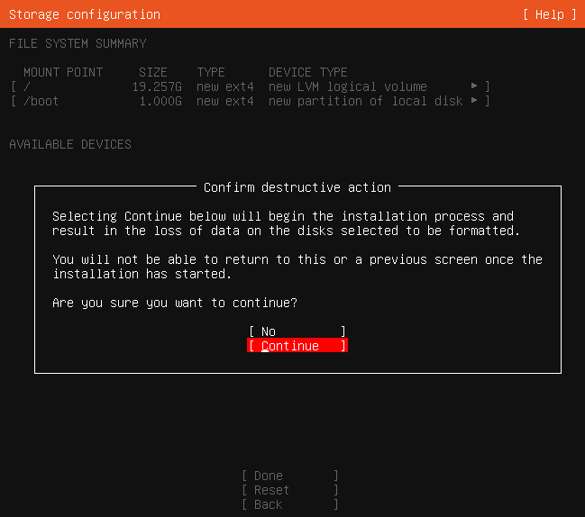

Setting Up VM
Objective
This section aims to set up the required infrastructure to perform the task and solve the 1st point of the problem statement under Task 1.
In this section, I will be setting up two VMs:
- For Jenkins deployment.
- For the application(SuiteCRM) server.
Steps for creating VM
- I clicked on the
NEWicon to create a new machine. Create Virtual Machinewindow opened, as shown in the picture.

Configuration
- The
NameJenkins-infra. - The
Typeto Linux. Versionto Ubuntu (64-bit).- Allocated memory size(RAM).
Clicked on Create.
Create Virtual Hard Diskwill open.

- Allocated the storage.
- Set the default disk type to
VDI(VirtualBox Disk Image) - Selected storage on physical hard disk
Dynamically allocated. - Clicked on
Create.
VM is ready for Ubuntu 18.04 server installation.
To download the server image 18.04 on VirtualBox as it is an LTS (Long Term Support) version which is a desirable feature for a CI pipeline. I followed the official link link.

What is LTS?
- It is a product life cycle management policy in which a stable release of computer software is maintained for a longer period than the standard edition.
- The term is typically reserved for open-source software.
- Ubuntu 18.04 server has 5 years of support.
Installation steps for Ubuntu Server 18.04
I decided to install the Ubuntu Server 18.04 because my system was not able to support the Desktop Image of Ubuntu 18.04 server.
In the VM box, I selected the VM < Jenkins-infra > to install the server and click on Start.

Then the Select start-up disk window opened and I clicked on the folder which gave a new screen Optical Disk Selector. I selected the server image and clicked on Choose.

Server image is now selected and I clicked on Start.

After clicking on Start Jenkins VM starts running.

The installer is designed to be easy to use and have sensible defaults so for a first install I have mostly just accepted the defaults for the most straightforward installation. Beginning with installation:
Language selection

This screen selects the language. The default language for the installed system is selected as English as I did not want to make changes so pressed Enter button.
Keyboard configuration

By default, the English (US) layout and variant keyboard is selected as here also I do not want to make changes, pressed Enter button.
Network

Configuration of the network is done from here and I left it as default because I did not want to do any changes. Selected Done and pressed Enter.
Configure proxy

The proxy configured on this screen is used for accessing the package repository and the snap store both in the installer environment and in the installed system. I did not provide any Proxy address, kept it default and selected Done
Mirror

The installer will attempt to use GeoIP to lookup an appropriate default package mirror for your
location. I kept this too as default and selected Done
Guided Storage Configuration

I do not have to make any changes to the storage configuration. So I selected Done and
pressed the Enter button.
Storage Configuration

Selected Done and I did not make any changes.

Selected continue and pressed Enter to begin the installation.
Profile Setup

I filled the required details. Selected Done and pressed the Enter button.
SSH

I Selected the option Install OpenSSH server because by default Ubuntu does not have an SSH server installed. It has only an SSH client installed. It is very common practice for administrators to SSH into the Ubuntu server so later on, I will also have to SSH to connect the two VMs. It is better to install the OpenSSH server here only with one click of a button.
Selected Done and pressed the Enter button.
Snaps

If a network connection is enabled, a selection of snaps that are useful in a server environment is presented and can be selected for installation.
After this, selected Done and pressed Enter.
Installation logs

Once the installation is complete, I selected Reboot pressed Enter button. Similarly, the second VM can be installed. Here, I finished with the installation of Ubuntu 18.04(LTS) server.